java-11 RADARGUNs3
Context at bottom
/home/jvanek/git/benchmarks-in-nested-virtualisation-toolchain/final_results/vm_results/vm_results_RADARGUNs1
java-11
RADARGUNs3
/home/jvanek/git/benchmarks-in-nested-virtualisation-toolchain/final_results/vm_results/vm_results_RADARGUNs3
java-11
RADARGUNs3
vm_results_RADARGUNs3
- vm_results_RADARGUNs3 - throughput get
- vm_results_RADARGUNs3 - throughput put
- vm_results_RADARGUNs3 - response mean time get
- vm_results_RADARGUNs3 - response mean time put
vm_results_RADARGUNs3 - throughput get
Expected number of java-11 JDKs: 11
1st avgmed_alljdks_metric:
/home/jvanek/git/benchmarks-in-nested-virtualisation-toolchain/final_results/result_processing.py /home/jvanek/git/benchmarks-in-nested-virtualisation-toolchain/final_results/vm_results/vm_results_RADARGUNs3 BasicOperations.Get.Throughput= False
values: [45073, 47872, 46355, 46249, 47383, 48253, 47144, 48218, 48793, 49715, 48774, 49022, 45977, 48564, 48133, 49359, 47571, 47937, 48562, 46221, 49930, 49057, 46875, 46526, 48089, 49963, 48742, 48942, 49272, 48795, 50291, 48362, 49229, 49342, 46385, 44028, 43666, 44083, 44863, 43515, 42697, 45121, 44626, 44630, 44319, 43529, 45032, 44429, 45155, 45380, 45026, 44299, 45446, 44047, 44594]

Expected number of iterations: 5
final number of values: 55 out of 55
Pass rate: 100.0%
values: (42697, 50291, 46790.181818181816, 46875)

** accuracy from all jdks and runs
more is better
MIN: 42697
MAX: 50291
AVG: 46790.181818181816
MED: 46875
Relative differences 1:
MIN-MAX: 15.0 %
MIN-AVG: 9.0 %
MIN-MED: 9.0 %
MAX-MIN: -18.0 %
MAX-AVG: -7.0 %
MAX-MED: -7.0 %
AVG-MED: 0.0 %
stored to java-11.properties. sort | uniq that!
2nd avgmed_by_jdk_metric:
values: [46586.4, 48424.6, 48094.0, 47930.0, 48095.4, 49142.8, 48721.8, 44031.0, 44278.6, 44705.0, 44682.4]

values: [46355, 48253, 48564, 47937, 48089, 48942, 49229, 44028, 44626, 45032, 44594]
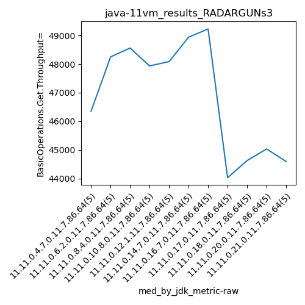
values: (44031.0, 49142.8, 46790.181818181816, 47930.0)
values: (44028, 49229, 46877.181818181816, 47937)
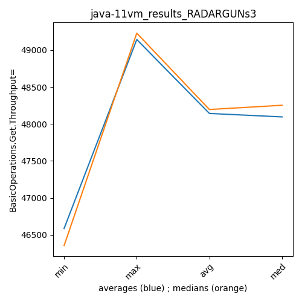
** accuracy from all jdks where runs were avged
more is better
MIN: 44031.0
MAX: 49142.8
AVG: 46790.181818181816
MED: 47930.0
Relative differences 1:
MIN-MAX: 10.0 %
MIN-AVG: 6.0 %
MIN-MED: 8.0 %
MAX-MIN: -12.0 %
MAX-AVG: -5.0 %
MAX-MED: -3.0 %
AVG-MED: 2.0 %
stored to java-11.properties. sort | uniq that!
** accuracy from all jdks where runs were medianed
more is better
MIN: 44028
MAX: 49229
AVG: 46877.181818181816
MED: 47937
Relative differences 1:
MIN-MAX: 11.0 %
MIN-AVG: 6.0 %
MIN-MED: 8.0 %
MAX-MIN: -12.0 %
MAX-AVG: -5.0 %
MAX-MED: -3.0 %
AVG-MED: 2.0 %
stored to java-11.properties. sort | uniq that!
vm_results_RADARGUNs3 - throughput put
Expected number of java-11 JDKs: 11
1st avgmed_alljdks_metric:
/home/jvanek/git/benchmarks-in-nested-virtualisation-toolchain/final_results/result_processing.py /home/jvanek/git/benchmarks-in-nested-virtualisation-toolchain/final_results/vm_results/vm_results_RADARGUNs3 BasicOperations.Put.Throughput= False
values: [11268, 11968, 11584, 11564, 11840, 12065, 11787, 12053, 12204, 12418, 12195, 12253, 11487, 12147, 12035, 12329, 11901, 11983, 12142, 11553, 12480, 12264, 11724, 11636, 12023, 12491, 12187, 12233, 12324, 12204, 12570, 12096, 12306, 12342, 11603, 11001, 10916, 11022, 11207, 10873, 10667, 11283, 11156, 11161, 11080, 10875, 11249, 11106, 11286, 11351, 11249, 11072, 11366, 11008, 11152]
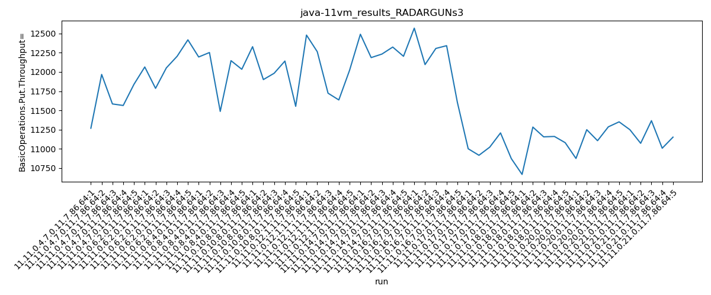
Expected number of iterations: 5
final number of values: 55 out of 55
Pass rate: 100.0%
values: (10667, 12570, 11697.072727272727, 11724)

** accuracy from all jdks and runs
more is better
MIN: 10667
MAX: 12570
AVG: 11697.072727272727
MED: 11724
Relative differences 1:
MIN-MAX: 15.0 %
MIN-AVG: 9.0 %
MIN-MED: 9.0 %
MAX-MIN: -18.0 %
MAX-AVG: -7.0 %
MAX-MED: -7.0 %
AVG-MED: 0.0 %
stored to java-11.properties. sort | uniq that!
2nd avgmed_by_jdk_metric:
values: [11644.8, 12105.4, 12023.4, 11981.6, 12025.4, 12287.8, 12183.4, 11003.8, 11069.4, 11173.4, 11169.4]
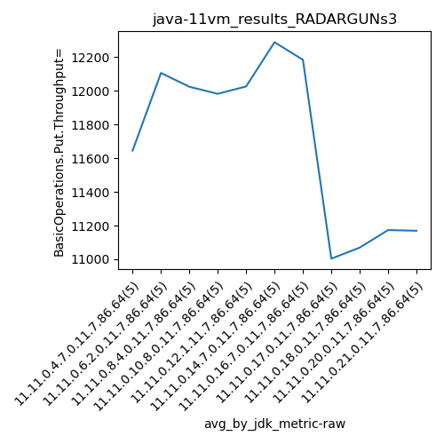
values: [11584, 12065, 12147, 11983, 12023, 12233, 12306, 11001, 11156, 11249, 11152]
values: (11003.8, 12287.8, 11697.072727272725, 11981.6)
values: (11001, 12306, 11718.09090909091, 11983)
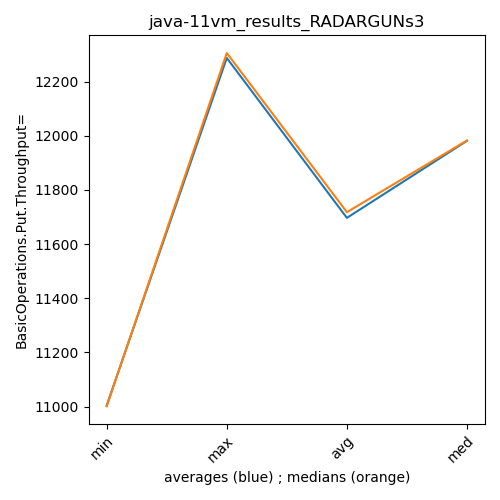
** accuracy from all jdks where runs were avged
more is better
MIN: 11003.8
MAX: 12287.8
AVG: 11697.072727272725
MED: 11981.6
Relative differences 1:
MIN-MAX: 10.0 %
MIN-AVG: 6.0 %
MIN-MED: 8.0 %
MAX-MIN: -12.0 %
MAX-AVG: -5.0 %
MAX-MED: -3.0 %
AVG-MED: 2.0 %
stored to java-11.properties. sort | uniq that!
** accuracy from all jdks where runs were medianed
more is better
MIN: 11001
MAX: 12306
AVG: 11718.09090909091
MED: 11983
Relative differences 1:
MIN-MAX: 11.0 %
MIN-AVG: 6.0 %
MIN-MED: 8.0 %
MAX-MIN: -12.0 %
MAX-AVG: -5.0 %
MAX-MED: -3.0 %
AVG-MED: 2.0 %
stored to java-11.properties. sort | uniq that!
vm_results_RADARGUNs3 - response mean time get
Expected number of java-11 JDKs: 11
1st avgmed_alljdks_metric:
/home/jvanek/git/benchmarks-in-nested-virtualisation-toolchain/final_results/result_processing.py /home/jvanek/git/benchmarks-in-nested-virtualisation-toolchain/final_results/vm_results/vm_results_RADARGUNs3 BasicOperations.Get.ResponseTimeMean True
values: [134533, 126963, 130740, 131376, 128327, 124951, 128362, 125738, 124760, 122327, 123981, 123845, 131680, 125376, 125828, 123945, 126550, 126479, 124551, 130344, 121894, 123986, 128578, 130084, 126263, 121550, 124495, 123983, 123349, 124487, 121129, 125151, 122426, 122880, 131246, 134289, 134995, 134683, 132823, 136781, 138078, 131549, 132643, 131732, 134229, 136096, 132648, 134174, 132541, 130899, 132906, 133116, 131382, 135181, 133630]
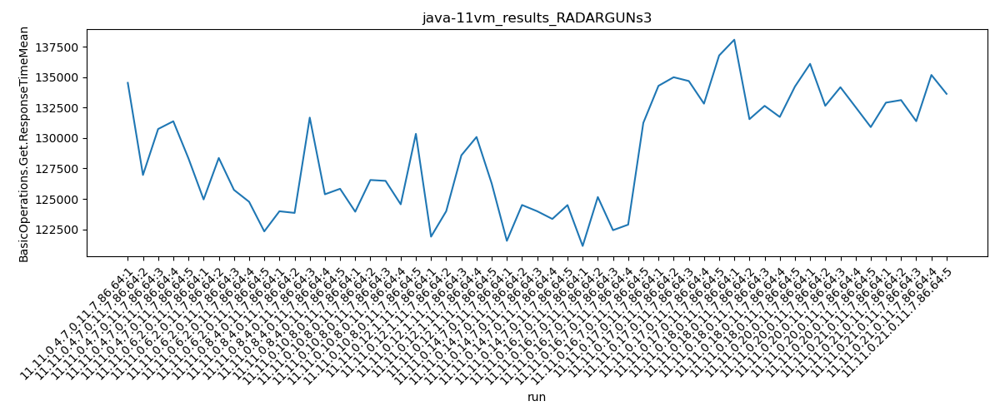
Expected number of iterations: 5
final number of values: 55 out of 55
Pass rate: 100.0%
values: (121129, 138078, 128846.03636363636, 128578)

** accuracy from all jdks and runs
more is worse
MIN: 138078
MAX: 121129
AVG: 128846.03636363636
MED: 128578
Relative differences 1:
MIN-MAX: 14.0 %
MIN-AVG: 7.0 %
MIN-MED: 7.0 %
MAX-MIN: -12.0 %
MAX-AVG: -6.0 %
MAX-MED: -6.0 %
AVG-MED: 0.0 %
stored to java-11.properties. sort | uniq that!
2nd avgmed_by_jdk_metric:
values: [130387.8, 125227.6, 126142.0, 126373.8, 126161.0, 123572.8, 124566.4, 134714.2, 133646.2, 133271.6, 133243.0]
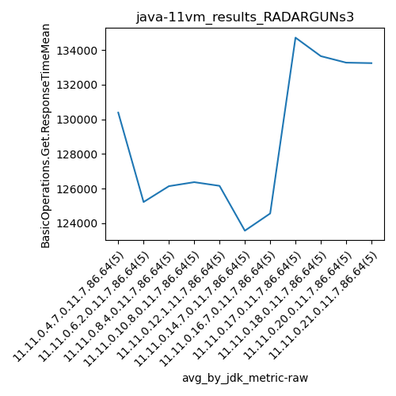
values: [130740, 124951, 125376, 126479, 126263, 123983, 122880, 134683, 132643, 132648, 133116]
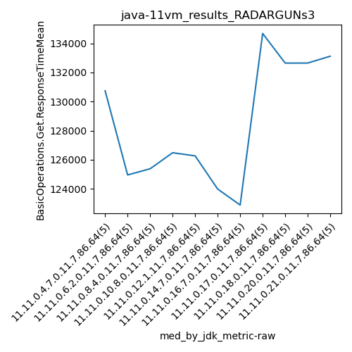
values: (123572.8, 134714.2, 128846.03636363638, 126373.8)
values: (122880, 134683, 128523.81818181818, 126479)
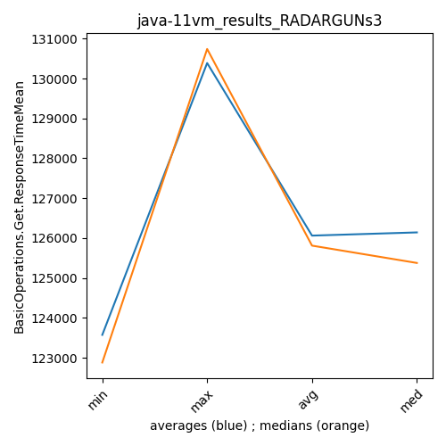
** accuracy from all jdks where runs were avged
more is worse
MIN: 134714.2
MAX: 123572.8
AVG: 128846.03636363638
MED: 126373.8
Relative differences 1:
MIN-MAX: 9.0 %
MIN-AVG: 5.0 %
MIN-MED: 7.0 %
MAX-MIN: -8.0 %
MAX-AVG: -4.0 %
MAX-MED: -2.0 %
AVG-MED: 2.0 %
stored to java-11.properties. sort | uniq that!
** accuracy from all jdks where runs were medianed
more is worse
MIN: 134683
MAX: 122880
AVG: 128523.81818181818
MED: 126479
Relative differences 1:
MIN-MAX: 10.0 %
MIN-AVG: 5.0 %
MIN-MED: 6.0 %
MAX-MIN: -9.0 %
MAX-AVG: -4.0 %
MAX-MED: -3.0 %
AVG-MED: 2.0 %
stored to java-11.properties. sort | uniq that!
vm_results_RADARGUNs3 - response mean time put
Expected number of java-11 JDKs: 11
1st avgmed_alljdks_metric:
/home/jvanek/git/benchmarks-in-nested-virtualisation-toolchain/final_results/result_processing.py /home/jvanek/git/benchmarks-in-nested-virtualisation-toolchain/final_results/vm_results/vm_results_RADARGUNs3 BasicOperations.Put.ResponseTimeMean True
values: [519494, 488508, 506076, 505390, 493382, 488029, 497544, 485815, 478470, 469730, 481913, 477721, 511317, 480144, 487580, 470880, 495941, 489734, 482991, 510624, 467878, 475889, 502359, 504455, 486322, 468152, 479793, 478465, 474276, 479384, 463829, 485403, 479209, 474692, 502932, 542115, 547529, 540043, 529430, 546231, 561081, 526592, 534222, 536835, 535347, 548288, 526119, 533008, 523336, 523466, 524297, 539704, 520484, 537997, 531673]
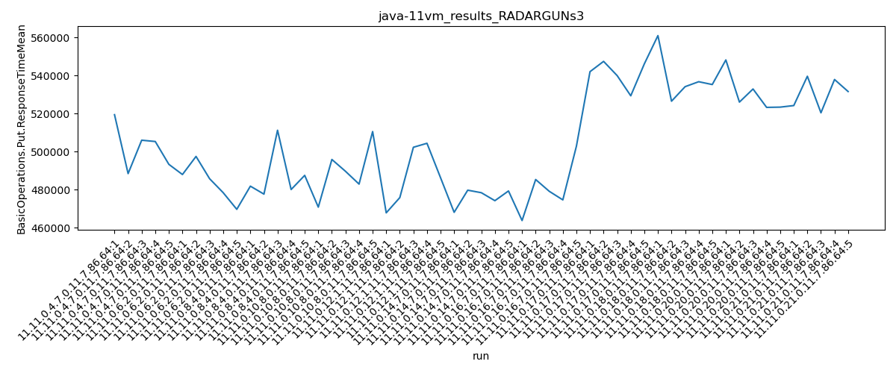
Expected number of iterations: 5
final number of values: 55 out of 55
Pass rate: 100.0%
values: (463829, 561081, 504583.9636363636, 502359)

** accuracy from all jdks and runs
more is worse
MIN: 561081
MAX: 463829
AVG: 504583.9636363636
MED: 502359
Relative differences 1:
MIN-MAX: 21.0 %
MIN-AVG: 11.0 %
MIN-MED: 12.0 %
MAX-MIN: -17.0 %
MAX-AVG: -8.0 %
MAX-MED: -8.0 %
AVG-MED: 0.0 %
stored to java-11.properties. sort | uniq that!
2nd avgmed_by_jdk_metric:
values: [502570.0, 483917.6, 487735.0, 490034.0, 487380.6, 476014.0, 481213.0, 541069.6, 538815.4, 530843.4, 530831.0]

values: [505390, 485815, 481913, 489734, 486322, 478465, 479209, 542115, 535347, 526119, 531673]
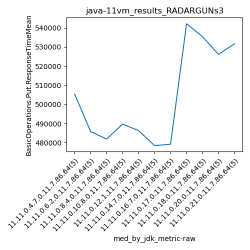
values: (476014.0, 541069.6, 504583.9636363636, 490034.0)
values: (478465, 542115, 503827.45454545453, 489734)
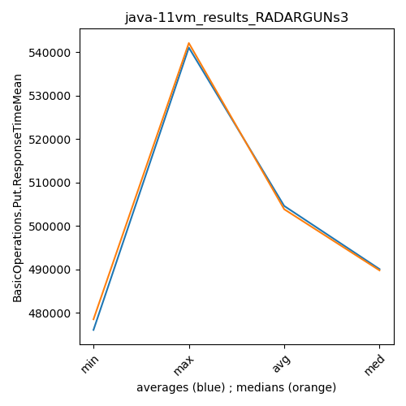
** accuracy from all jdks where runs were avged
more is worse
MIN: 541069.6
MAX: 476014.0
AVG: 504583.9636363636
MED: 490034.0
Relative differences 1:
MIN-MAX: 14.0 %
MIN-AVG: 7.0 %
MIN-MED: 10.0 %
MAX-MIN: -12.0 %
MAX-AVG: -6.0 %
MAX-MED: -3.0 %
AVG-MED: 3.0 %
stored to java-11.properties. sort | uniq that!
** accuracy from all jdks where runs were medianed
more is worse
MIN: 542115
MAX: 478465
AVG: 503827.45454545453
MED: 489734
Relative differences 1:
MIN-MAX: 13.0 %
MIN-AVG: 8.0 %
MIN-MED: 11.0 %
MAX-MIN: -12.0 %
MAX-AVG: -5.0 %
MAX-MED: -2.0 %
AVG-MED: 3.0 %
stored to java-11.properties. sort | uniq that!
/home/jvanek/git/benchmarks-in-nested-virtualisation-toolchain/final_results/vm_results/vm_results_DACAPO
java-11
RADARGUNs3
/home/jvanek/git/benchmarks-in-nested-virtualisation-toolchain/final_results/vm_results/vm_results_J2DBENCH
java-11
RADARGUNs3
/home/jvanek/git/benchmarks-in-nested-virtualisation-toolchain/final_results/vm_results/vm_results_SPECJBB
java-11
RADARGUNs3
/home/jvanek/git/benchmarks-in-nested-virtualisation-toolchain/final_results/vm_results/vm_results_JMH
java-11
RADARGUNs3
pass rates:
vm_results_RADARGUNs3=100.0%
Context:
- vm_results
- RADARGUNs3